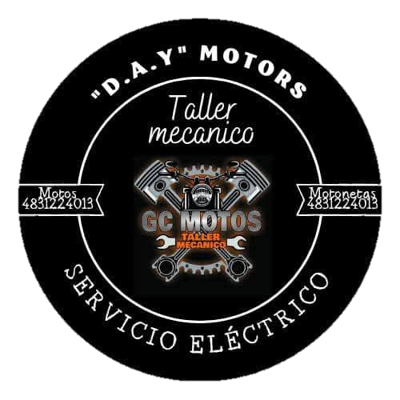
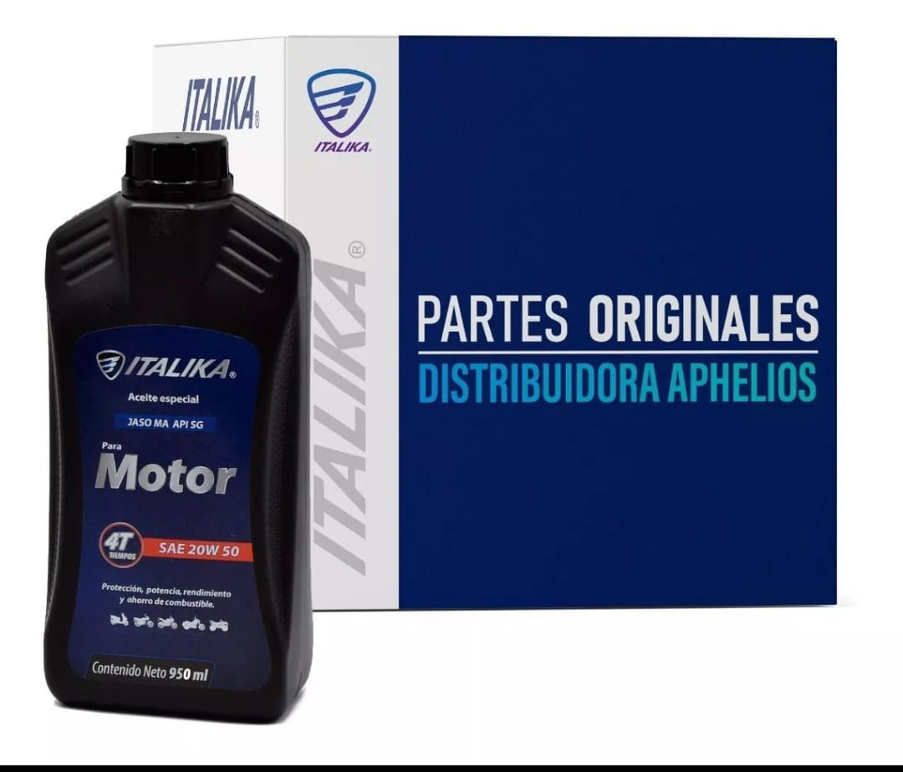
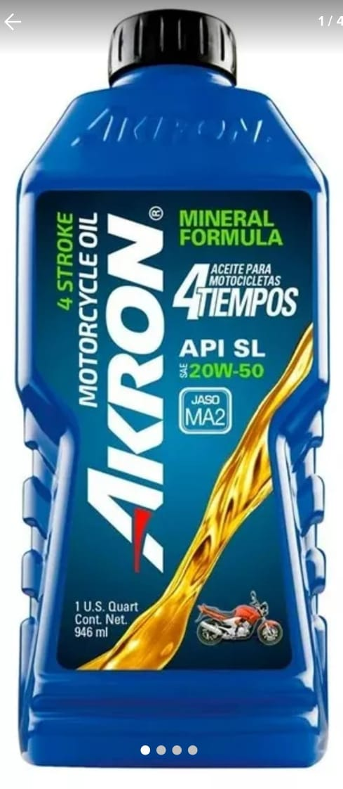
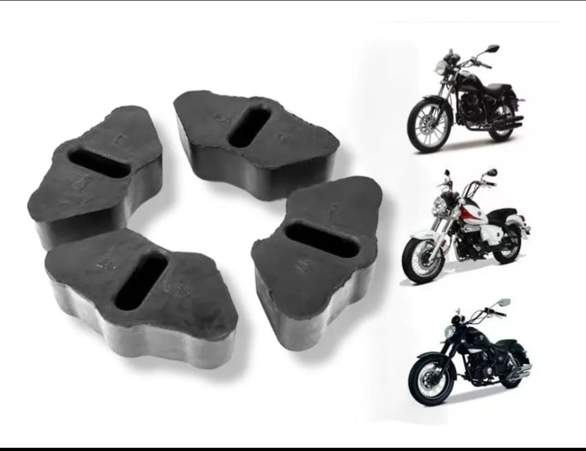
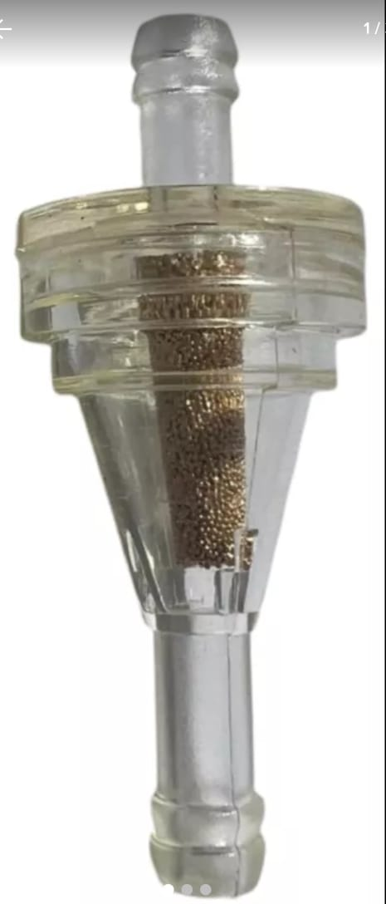
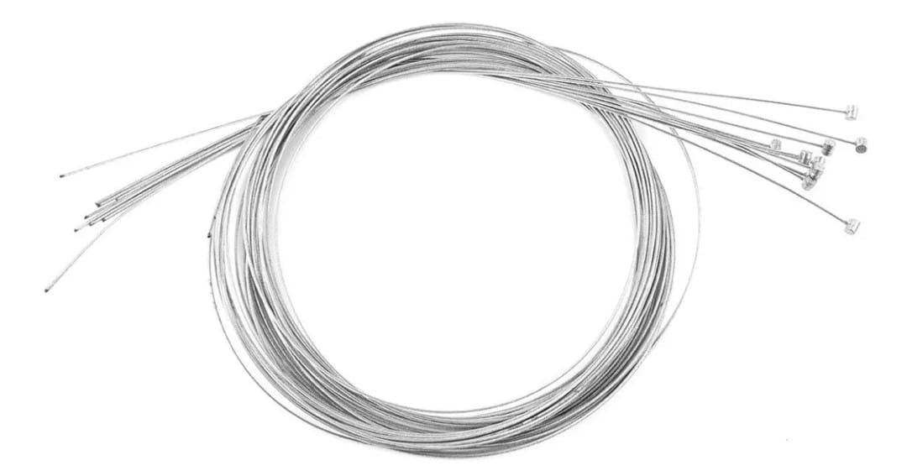
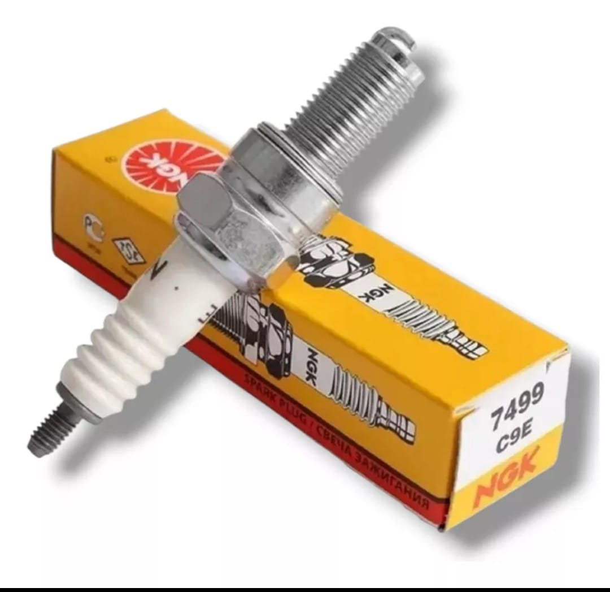
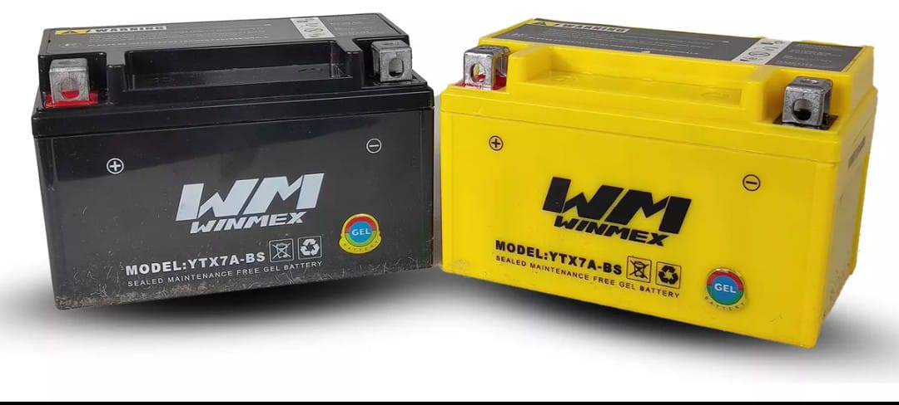
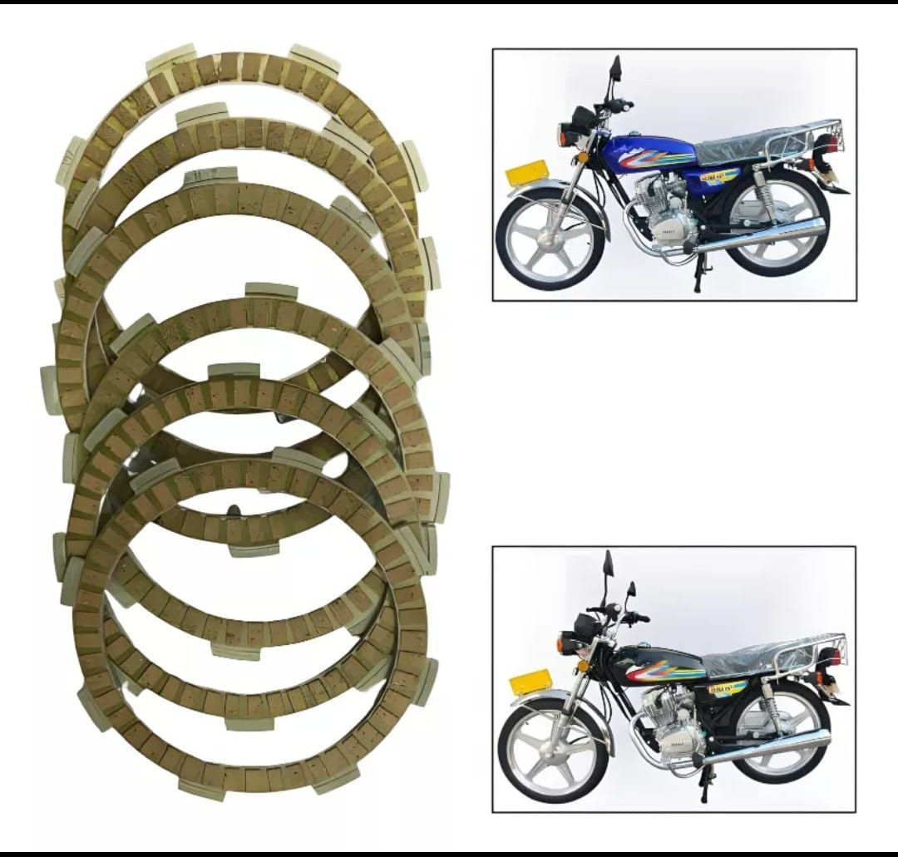
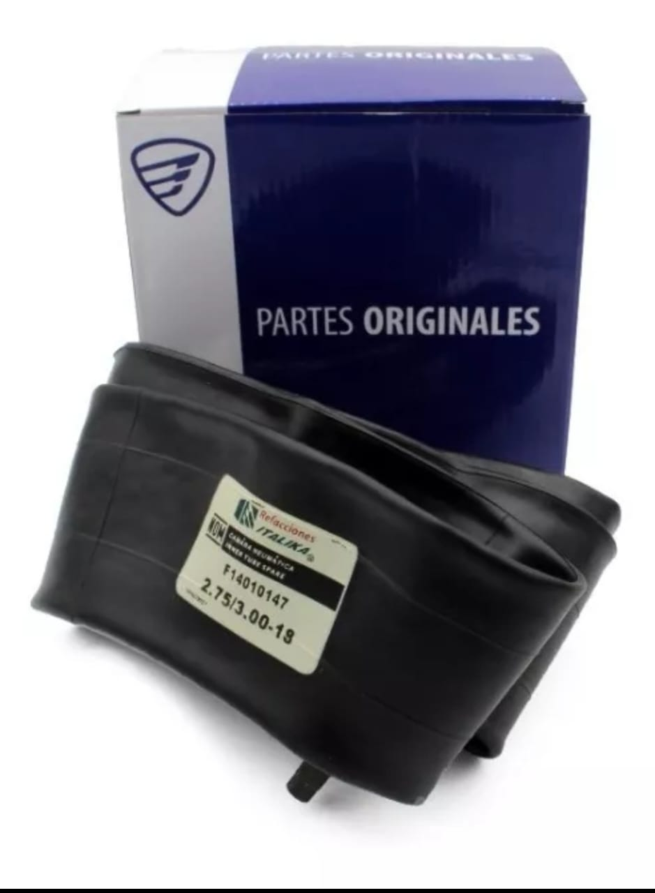

| Pieza disponible | Descripción |
|---|---|
|  | Descripción Aceite Especial Motor 4 Tiempos 20w-50 950ml Italika Original Aplicaciones: - Motor 4 tiempos Aceite multigrado de base mineral, para motores de 4 tiempos con uso en carretera o ciudad. Satisface los requerimientos de los principales fabricantes de motores de 4 tiempos. |
|  | Descripción AKRON® MOTORCYCLE 4 STROKE • Viscosidad óptima para altas temperaturas • API SL para motocicletas con motores de cuatro tiempos. |
|  | Descripción ¡Optimiza el rendimiento de tu moto con este juego de damper de tracción original Italika! Este juego de damper de tracción original está diseñado para absorber impactos y reducir vibraciones en la transmisión, mejorando la estabilidad y suavidad en la conducción. Hecho con materiales duraderos, es ideal para mantener tu moto en condiciones óptimas. |
| Descripción GOMAS DE SPROCK TRASERO | |
|  | Descripción FILTRO DE GASOLINA PIEDRA UNIVERSAL |
|  | Descripción CHICOTE CABLE DE ACERO PARA MOTOCARROS 2 X 3000 PARA CLUTCH UNIVERSAL |
|  | Descripción La bujía NGK modelo 7499 es una opción ideal para quienes buscan un rendimiento óptimo en sus motocicletas y cuatriciclos. Diseñada específicamente para modelos como Vento, Tornado 250, Storm 250, Rocketman 250 y Falkon 250, esta bujía garantiza una ignición eficiente y un funcionamiento suave del motor. Su construcción de alta calidad asegura durabilidad y resistencia, lo que se traduce en un menor desgaste y un mejor rendimiento a largo plazo. |
|  | Descripción Esta batería no se maneja con ácido. Esta batería no se necesita preparar, ya viene cargada y lista para usar, sólo atornilla, y ¡LISTO! Las medidas de esta batería son: -Largo 8.5cm -Alto: 9.5cm -Ancho: 15cm |
|  | Descripción #Pastas De CT100/PLATINA 100/DISCOVER 125 M/DISCOVER 125 ST/DISCOVER 125 5G original Calidad #De parte original: 36JE0024 #Aplicaciones: -Bajaj CT100 -Bajaj PLATINA 100 -Bajaj DSCOVER 125 M -Bajaj DISCOVER 125 ST -Bajaj DISCOVER 125 5G |
|  | Descripción Cámara 2.75/3.00 -18 UNIVERSAL: RIN 17, 18 Y 21, Cámara 2.75/21, Cámara 120/80/18, Cámara 2.75/17, Cámara 3.00/18 |